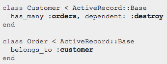

Associations
Associations allow you to create links between models in Ruby and links between tables in your database. (Setting up the foreign keys and linking them to primary keys) By declaring a connection between the models to the database, you can quickly create objects and manipulate them. Below is one part of an association that has been set up in the models.
Associations need to be set up not only in your models but also in your migrations. In the model director of your project you will have to create two associations to set up the connection between the two models/classes. In the migrations directory you will need to create an association for the formation of a foreign key in your table. Use the convention as you create a new migration file: (You will need to wrap the command inside a class)
Types of Associations
References pulled from RailsGuides
belongs_to
A one to one connection with another model.
A model view of belongs_to.
A migration view of belongs_to. Make sure to note that you should create separate migrations for each table, not like how this example has done.
has_many
A one to many connection with another model
A model view of has_many
A migration of has_many
Note that in the migration file, you usually use the belongs_to regardless the relationship. Remember that you are just creating the FOREIGN KEYhere! Think about which table should have a foreign class id.
Polymorphic Associations
Are when models can belong to more than one other model on a single association. Checkout Railsguides for more info.